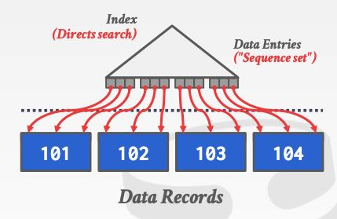
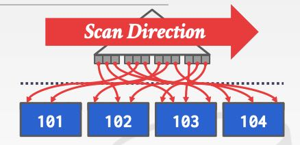

CMU DB: Tree Indexes
主要就是介绍BTree/B+Tree. 通常来说我们遇到的都是B+Tree, 就是中间节点只是存放指针信息，只有在叶子节点上才存放真正的数据。只不过因为B+Tree太广泛使用了，所以有时候认为这个才是BTree.
BTree的增删改查在算法和数据结构书里面都会提到。在工程实现的时候，BTree节点可能还会存在额外的字段比如parent, left, right这些节点，维护这些节点使得BTree操作算法更加复杂。不过维护这些节点也会有许多好处，比如做某些分裂和插入的操作优化，以及扫表等。
叶子节点的不同存储方式，会导致索引分为两类：clustered index以及heap. clustered index是指page节点内部以及之间都是有序的，这就要求底层page也需要进行分裂。而heap则是一个记录可以插入在任何page里面，而不用保证page节点内部以及之间是有序的。下图分别是clustered 和 heap，可以看到从叶子节点进行遍历的话，clustered index是可以保证顺序的，而heap则没有办法保证顺序，甚至一个page里面也可能是无序的。对于heap想做index scan的话，最好是首先得到所有的pages, 然后按照page id进行遍历，这样磁盘读的性能会好些。
 
这节课分为两个部分，第一个部分介绍基础知识，第二个部分则介绍BTree实现具体问题以及其他的Tree Indexes(Trie/Radix Tree, Inverted Index)
BTree几个具体实现相关的问题有：
- node size. 对于慢速旋转磁盘来说，这个值更大些比较合适。HDD~1MB, SSD~10KB, Mem~512B
- merge threshold. 牺牲平衡性，减少merge操作次数
- variable length keys. 如何在node内部存储变长数据
- intra-node search. 线性，二分，插值搜索
BTree几个可能的优化：
- prefix compression（节点内部存储使用前缀压缩）
- deduplication（节点内部对于dup keys做优化）
- suffix truncation （只存储可以作为判断标准的前缀）
- bulk insert （针对顺序导入快速构建BTree）
- pointer swizzling （节点除了存放page id, 还存放page pointer, 可以减少一次page id到pointer映射）
几个DBMS索引方式，我不是特别清楚：
- partial indexes. 针对符合条件的行做索引
- covering indexes. 索引上就可以查找到信息，还可以在索引上附加额外列
- functional/expression idnexes. 针对表达式的值进行索引